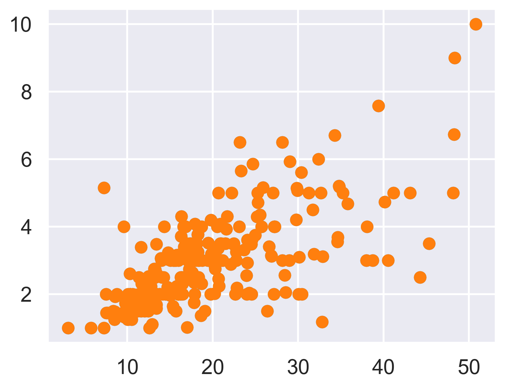
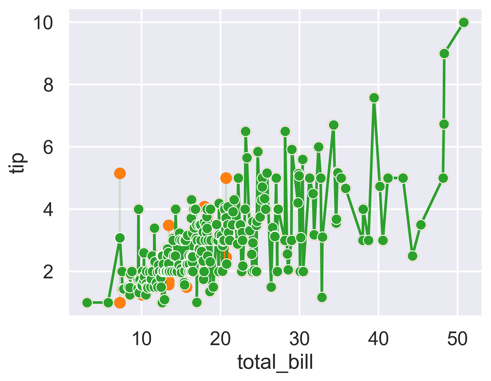
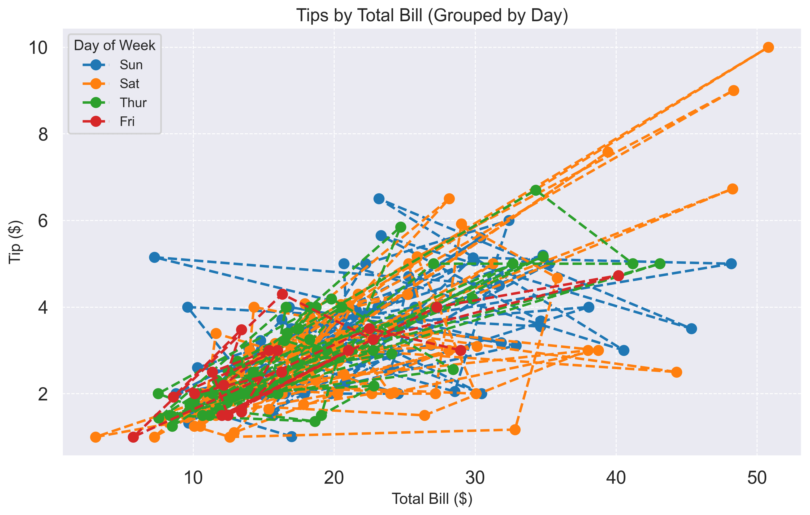
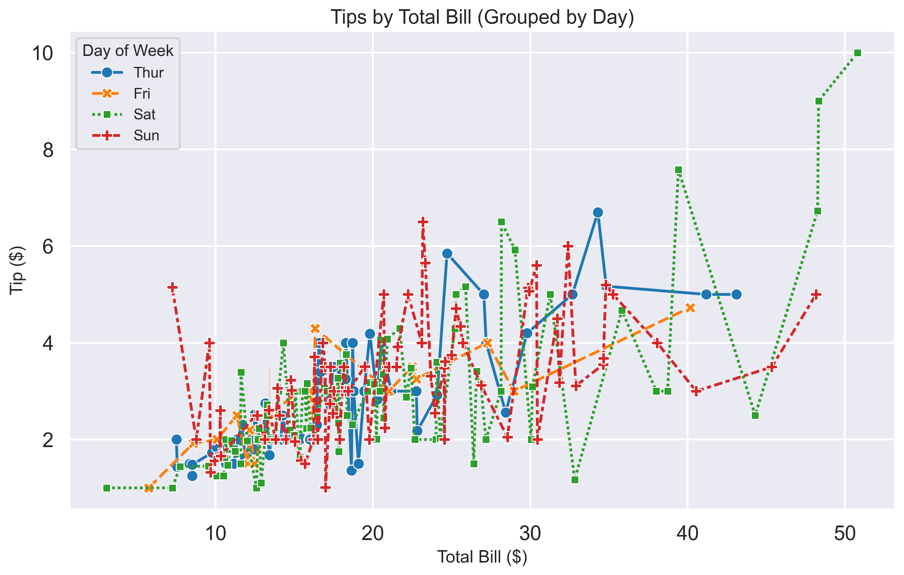

Matplotlib vs. Seaborn: Same Plot, Different Styles
Introduction
The goal is to demonstrate the strengths that both the matplotlib and seaborn libraries have when plotting graphs. Only basic data will be plotted to illustrate the basic functions each library has and the special features for plotting each library has. I will be plotting the same graphs (with some minor differences) using both libraries. When working on a project you may just want a “quick and dirty” graph that just shows you the data. Othertimes, you may want to make a nice plot to present to others. We will inspect both of the libraries so you can learn the advantages of both and see which one is more time efficient and better for you and your situation. Since the main purpose is to compare these libraries, I will not go into major detail the syntax and every capability of each library. For more information on how to use the seaborn library, visit Seaborn Tutorial. For more information on how to use the matplot library, visit Matplotlib Tutorial.
Characteristics
Matplotlib
- Foundational library
- Other graphing libraries are based off the matplotlib library. Even using other graphing libraries such as seaborn, you still need to import matplotlib and use some of its functions.
- Flexible but verbose
- Its flexible in the many different features availbale, but it requires you to type a lot of code just to even label the graphs. It can’t all be done in the same line, you have to specify specific functions each time which can be time-consuming and repetitive.
- Default look is plain
- The default look is very basic. If you want color and better backgrounds, you will have to specify it.
- Great for fine-grained customization
- You can change every little thing with the graph allowing you to get the exact graph you want.
Seaborn
- High-level interface built on Matplotlib
- Seaborn is built on top of Matplotlib, so it can use Matplotlib functions when needed, but it automates many common tasks like styling, grouping, and legends.
- Polished style defaults
- Unlike Matplotlib’s plain default look, Seaborn comes with clean, attractive themes (e.g., darkgrid, whitegrid, ticks using the set_style function) that make plots visually appealing with minimal code.
- Statistical plotting built-in
- Seaborn understands DataFrames and categorical variables. Functions like lineplot, barplot, and boxplot automatically handle grouping (hue, col, row) and aggregation (mean, confidence intervals), which saves a lot of manual coding.
- Great for quick exploratory plots
- With just one line of code, you can generate complex plots that summarize trends, distributions, or relationships. Perfect for exploratory data analysis (EDA) and quick insights.
Graphs
Matplotlib graph with minimum code
import matplotlib.pyplot as plt
import seaborn as sns
# Load dataset from seaborn
tips = sns.load_dataset("tips")
plt.plot(tips["total_bill"], tips["tip"], "o") #"o" is making each datapoint a dot
plt.show()
Seaborn graph with minimum code
import seaborn as sns
import matplotlib.pyplot as plt
tips = sns.load_dataset("tips")
sns.lineplot(x="total_bill", y="tip", data=tips, marker="o")
plt.show()
Basic Graph Comparison
As you can see, the code to implement the basic plots for both libraries is about the same. The only difference is that the matplotlib library sets the plot using plt.plot, while the seaborn library uses sns.lineplot. Seaborn also requires a x= and y= phrase in sns.lineplot while plt.plot can just have the data in order of x then y. I did add the marker=“o” for both libraries to make the data more visually appealing, but it is not required in the default graph. One things that is different is that the seaborn plot automatically adds lines between the different points while you would have to specifiy that with the matplotlib library.
Detailed Graphs
Detailed Matplotlib Graph
import matplotlib.pyplot as plt
import seaborn as sns
tips = sns.load_dataset("tips")
# Increase figure size
plt.figure(figsize=(12, 7))
# Get unique days for grouping
days = tips["day"].unique()
colors = plt.get_cmap("tab10").colors # Color palette similar to Seaborn
# Plot each day separately
for i, day in enumerate(days):
day_data = tips[tips["day"] == day]
plt.plot(
day_data["total_bill"],
day_data["tip"],
linestyle="--", # Dashed line
marker="o", # Marker for each point
color=colors[i % len(colors)], #assigns colors to the data
label=day
)
# Add title and labels
plt.title("Tips by Total Bill (Grouped by Day)", fontsize=16)
plt.xlabel("Total Bill ($)", fontsize=14)
plt.ylabel("Tip ($)", fontsize=14)
# Add grid
plt.grid(True, linestyle="--", linewidth=0.8)
# Customize legend
plt.legend(title="Day of Week", fontsize=12, title_fontsize=13)
plt.show()
Detailed Seaborn graph
import seaborn as sns
import matplotlib.pyplot as plt
# Load seaborn's built-in dataset
tips = sns.load_dataset("tips")
# Set Seaborn style and context
sns.set_style("darkgrid") # Dark grid background
sns.set_context("talk") # Slightly larger labels for presentation
# Increase figure size
plt.figure(figsize=(12, 7))
sns.lineplot(
data=tips,
x="total_bill",
y="tip",
hue="day", # Separate lines by day of week
style="day", # Different marker for each day
markers=True, # Show marker for each point
linestyle="--", # Dashed lines
palette="tab10", # Custom color palette
ci=95 # 95% confidence interval shading
)
plt.title("Tips by Total Bill (Grouped by Day)", fontsize=16)
plt.xlabel("Total Bill ($)", fontsize=14)
plt.ylabel("Tip ($)", fontsize=14)
plt.legend(title="Day of Week", fontsize=12, title_fontsize=13)
plt.show()
Detailed Graph Comparison
These graphs may not be pretty, but they were made to show the main differences between the matplotlib and the seaborn libraries. The tips dataset is a dataset built into the seaborn library so we will use it for both graphs, but for the matplotlib graph, we will still only use functions from the matplotlib library. The main bits of code that the matplotlib library implemented to have the same graph as the seaborn library plot were the plt.get_camp(), and the for loop going through the different information. With this dataset, the matplotlib library needed the for loop seperate lines for each day of the week. The for loop splits the data by day, plots each subset with its own color, and manually adds a line. Seaborn is really covenient here because it does all this automatically with the hue function. Seaborn will also automatically choose styles based off of the hue function. We can specify the line type here to make it the same as the matplotlib plot, but without it, it would just choose one that it thinks looks the best. Seaborn also has the set_style() function that allows us to change the look of the entire plot. With darkgrid it gives you a dark background grid with white lines. Seaborn is built on matplotlib so it does still use the same method of assigning titles and axes as the matplotlib library.
Which One Is Better?
That really depends on what you want to do and the data you are graphing. If you want to customize every little thing in the graph, plotting functions such as cos or sin, or using very large datasets, matplotlib library is usually better. Seaborn is typically better if you just want a quick look at the data since it automatically adds colors and organizes the data on the graph in a neat way. It’s also more useful if you’re using a pandas dataframe and want statistical graphs that are beautiful. I invite you all to try out the matplotlib and seaborn library by asking AI for a dataset you can use to use the different features to see which one you prefer.